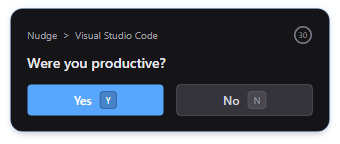

01
Harvest Engine
Tracks your foreground app, idle time and browser domain at 1Hz. Fuses three signals into 26 dimensions through a rolling 300-second window.

A local AI that learns your attention patterns and asks at the right moment.
Free · Open source · No account needed

Tracks your foreground app, idle time and browser domain at 1Hz. Fuses three signals into 26 dimensions through a rolling 300-second window.

Model trained exclusively on your YES/NO responses. Sub-100ms inference. Activates after 100 samples, retrains every 50 new answers. No cloud, no telemetry.
Track focus across Today, Week, Month and All Time. Hourly breakdowns, most-used apps with category colors, and AI prediction history with confidence sparklines.


Checks every 60 seconds when ML is active. Random 5–10 minute fallback when the model is still learning. Keyboard shortcuts: Ctrl+Shift+Y for YES, Ctrl+Shift+N for NO.
Free and open source. No account, no telemetry, no strings.
All releases
·
Source code
·
Requires pip install scikit-learn joblib for ML